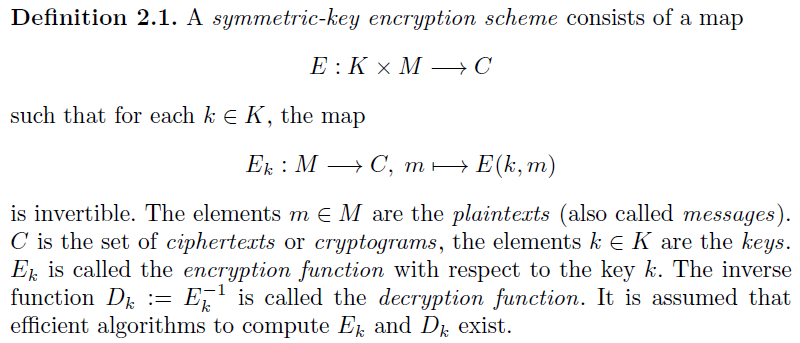
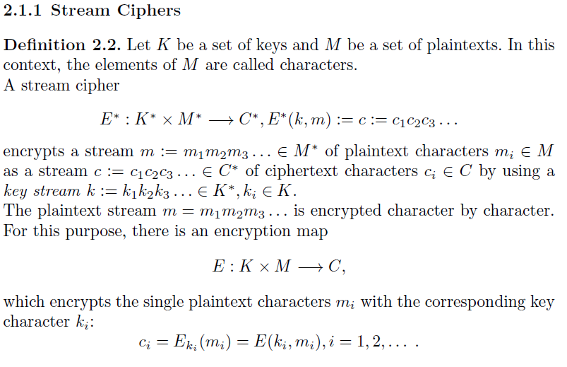
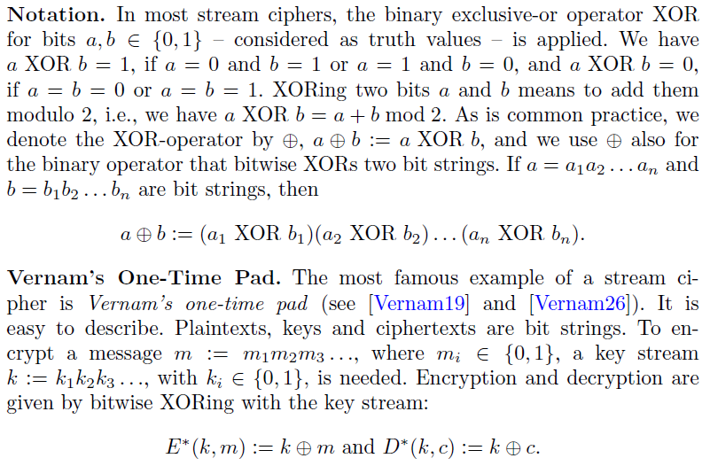
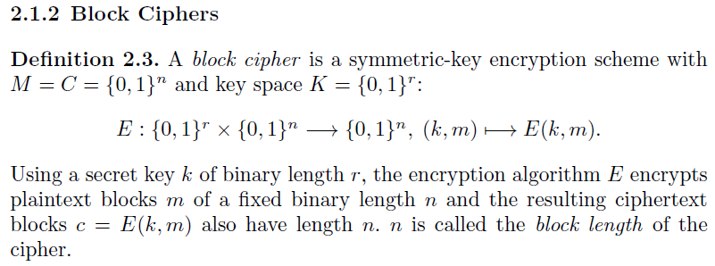
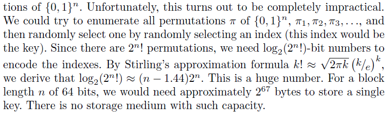
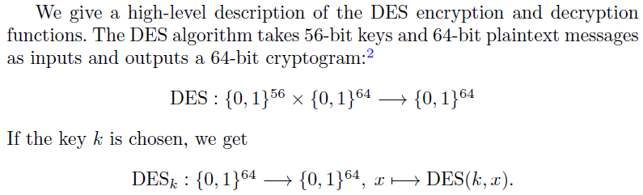
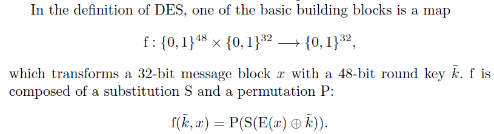

Alice and Bob first agree on a key k. They keep their shared key k secret. Before sending a message m to Bob, Alice encrypts m by using the encryption algorithm E and the key k. She obtains the ciphertext c = E(k,m) and sends c to Bob. By using the decryption algorithm D and the same key k, Bob decrypts c to recover the plaintext m = D(k, c). Key exchange is another problem solved by using public key method.  We also distinguish between block ciphers and stream ciphers. The encryption function of a block cipher processes plaintexts of fixed length. A stream cipher operates on streams of plaintext. Processing character by character, it encrypts plaintext strings of arbitrary length. If the plaintext length exceeds the block length of a block cipher, various modes of operation are used.
 Decrypting a ciphertext stream c=c1c2c3... is done character by character by applying the decryption map D with the same key stream k = k1k2k3... that was used for encryption.


Typical block lengths are 64 (as in DES) or 128 (as in AES).
Typical key lengths are 56 (as in DES) or 128, 192 and 256 (as in AES).
因为{0, 1}n的排列一共有2的n次方种可能，因此，从{0, 1}n这个set到{0, 1}n之间的排列有(2的n次方)!种可能性
选取第一个映射有2**n种可能，选取第二个映射有2**n - 1...依次类推，因此总的映射排列组合数量在：
2**n * (2**n - 1) * (2**n - 2) * .... * 1 = (2**n)!
相对这个数字来讲，由key的长度r决定的{0, 1}r的组合数量：2**r是非常小的，几乎可以忽略不计。
一旦你选定了一个key，由{0, 1}n到{0, 1}n之间的可选择的映射数量就被极大的压缩了。
之所以要做这种计算，是因为从OTP算法的设计我们得出一个结论，最大程度的随机带来最大程度的安全性。
所以，理想情况下，key的长度不应该是安全性最大化的阻碍。
而为了得到最大限度的安全性，我们可以为(2**n)!种排列组合编号，为了得到编号，需要以下的数字计算：
总之，key的长度需要达到2**67（当n=64时），存储这个key就够麻烦了。

所以现实中我们要选个短一点的key，一般来说56到256个bit。
尽管如此，block cipher的设计者们还是在努力使加密公式表现得像是随机的从一个很大的组合中选取结果一样。
Main user of DES: Governments, banks, financial companys.  DES consists of 16 major steps (rounds) Each round, a 48-bit round key ki is used. The 16 round keys k1, k2...k16 are computed from the 56-bit key k. the algo will be studied later.  The 32 message bits are extended to 48 bits, x → E(x) (some of the 32 bits are used twice), and XORed with the 48-bit round key k. The resulting 48 bits are divided into eight groups of 6 bits, and each group is substituted by 4 bits. Thus, we get 32 bits which are then permuted by P. The cryptographic strength of the DES function depends on the design of f, especially on the design of the eight famous S-boxes which handle the eight substitutions
A
A
R
I
S
L
S
*
C
f
B
f
B